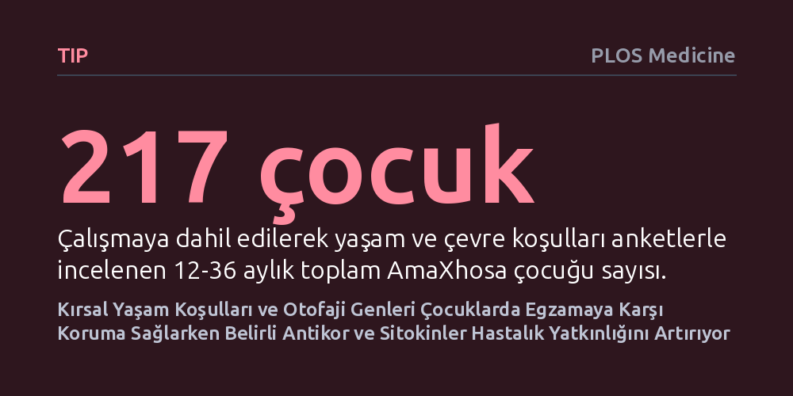

TIP · PLOS Medicine · 2026-09-09
Güney Afrika'daki AmaXhosa çocuklarında egzama gelişimini etkileyen çevresel ve bağışıklık faktörleri çok boyutlu makine öğrenimi yöntemleriyle incelendi. Kırsal yaşam koşulları ile otofaji genlerinin egzamadan koruduğu, yüksek IgE antikorları ve iltihap sitokinlerinin ise hastalık yatkınlığını artırdığı belirlendi.
Egzamanın yalnızca genetik bir bariyer bozukluğu olmadığını, kırsal yaşam tarzı ve hücresel temizlik süreçlerinin bağışıklık yanıtını düzenleyerek hastalığa karşı koruma sağlayabileceğini gösteriyor.

Atopik dermatit ya da yaygın adıyla egzama, erken çocukluk döneminde başlayan, deride şiddetli kaşıntı ve iltihaplı yaralarla seyreden kronik bir cilt hastalığıdır. Sanayileşmiş ülkelerde ve kalabalık şehirlerde görülme sıklığı hızla artan bu rahatsızlık, dünya genelinde çocukların önemli bir bölümünü etkilemektedir. Batı toplumlarında yürütülen klasik genetik araştırmalar, egzamanın temel nedenini çoğunlukla cilt bariyerini oluşturan filaggrin genindeki mutasyonlara dayandırmaktadır. Buna karşın Afrika topluluklarında bu mutasyonlar bulunmamasına rağmen hastalığın kentsel alanlarda tırmanışa geçmesi, araştırmacıları henüz keşfedilmemiş bağışıklık ve çevre mekanizmalarını araştırmaya itmiştir.
Güney Afrika'da yaşayan AmaXhosa topluluğu, bu mekanizmaları aydınlatmak için benzersiz bir fırsat sunuyor. Kırsal köylerde ve modern şehir merkezlerinde yaşayan AmaXhosa çocukları aynı genetik geçmişi paylaşıyor; ancak maruz kaldıkları yaşam şartları, ev ortamları, beslenme alışkanlıkları ve hava koşulları tamamen birbirinden farklılaşıyor. Araştırmacılar, bu çocuklarda egzamanın neden kentlerde çok daha sık görüldüğünü ve geleneksel kırsal yaşamın nasıl bir koruyucu kalkan sağlayabileceğini anlamak için kapsamlı bir çalışma başlattı.
Araştırma ekibi, 12 ila 36 aylık 217 çocuktan toplanan farklı veri türlerini bir araya getirdi. Bu veri seti çocukların ev ve çevre koşullarını sorgulayan anketleri, ev tozu akarı ile çeşitli besinlere karşı kanda gelişen alerji antikorlarını, bağışıklık sinyali ileten plazma sitokinlerini ve kandan elde edilen RNA dizileme verilerini içeriyordu. Farklı ölçeklerdeki bu devasa biyolojik veri katmanlarını klasik istatistik yöntemleriyle bir arada incelemek oldukça zordur. Bu nedenle ekip, verideki anlamlı desenleri yakalayabilmek için açıklanabilir makine öğrenimi yöntemlerine başvurdu.
Veri setindeki karmaşayı gidermek adına önce her alan kendi içinde elendi. Özellikle binlerce gen ifadesi arasından egzamalı ve sağlıklı çocukları birbirinden en iyi ayırt eden 560 genlik odak bir küme belirlendi. Ardından Random Forest sınıflandırıcıları eğitildi ve hangi faktörün sonuca ne kadar ağırlıkla etki ettiğini matematiksel olarak görmek için SHAP değerleri hesaplandı. Son aşamada ise DIABLO isimli entegrasyon algoritması kullanılarak çevre, bağışıklık belirteçleri ve genetik sinyaller aynı potada birleştirildi.
Farklı veri katmanlarının birleştirilmesi sonucunda çocuklar biyolojik olarak üç belirgin kümeye ayrıldı. Bu kümelerin ilki, doğrudan sağlıklı çocuklarla örtüşen koruyucu bir profil ortaya koydu. Kırsal yaşam koşullarına sahip çocuklarda belirli plazma sitokin seviyeleri ile hücrenin kendi kendini temizleyip yenilemesini sağlayan otofaji genlerinin daha aktif olduğu görüldü. Bu bulgu, geleneksel kırsal çevrenin hücresel geri dönüşüm mekanizmalarını canlı tutarak bağışıklık dengesini koruduğuna ve egzamayı engellediğine işaret ediyor.
Diğer iki küme ise egzamaya yatkınlık gösteren çocukların biyolojik özelliklerini ortaya çıkardı. Yatkınlık kümelerinin ilkinde, ev tozu akarına ve çeşitli besinlere karşı gelişen yüksek alerjen antikorları (toplam ve spesifik IgE), MCP-4 ve TARC gibi iltihap tetikleyici sitokinlerle kuvvetli bir birliktelik sergiledi. İkinci yatkınlık kümesinde ise bağışıklık hücrelerinin egzamaya özgü gen ifadesi imzası belirleyici oldu. Elde edilen sonuçlar, egzamanın tek tip bir hastalık olmadığını; çevresel tetikleyiciler ile bağışıklık sisteminin farklı moleküler yollarının birleşmesiyle ortaya çıktığını gösterdi.
Bu çalışma, aynı genetik arka plana sahip bireylerde çevresel faktörlerin bağışıklık tepkilerini ve hücresel mekanizmaları ne kadar derinden etkileyebileceğini somut olarak belgeliyor. Özellikle hücresel temizlik mekanizması olan otofajinin kırsal yaşamla ve koruyuculukla ilişkili çıkması, gelecekte egzama tedavisi ve önlenmesinde hücresel temizlik süreçlerinin yeni bir araştırma hedefi olabileceğini düşündürüyor. Ayrıca karmaşık biyomedikal verilerin açıklanabilir yapay zekâ modelleriyle yorumlanabileceği kanıtlanmış oluyor.
Yine de çalışmanın getirdiği sonuçları ihtiyatla değerlendirmek gerekiyor. Araştırma tek bir zaman diliminde gerçekleştirilen gözlemsel bir çalışma olduğu için bulunan bağlantılar kesin bir neden-sonuç kanıtı oluşturmuyor. Kırsal yaşamın tam olarak hangi bileşeninin bu koruyucu etkiyi başlattığı henüz bilinmiyor. Ayrıca modeller klinik teşhis amacıyla geliştirilmediği gibi, ulaşılan sonuçların genellenebilirliği bağımsız başka bir hasta grubunda henüz test edilip doğrulanmadı.